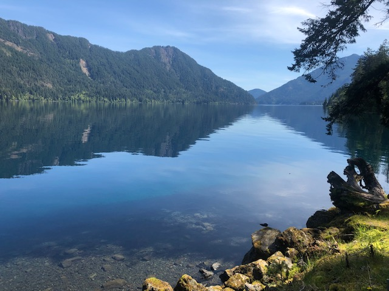

My name is Mark Tiapkov, I reside in Seattle, WA. with my partner and currently learning how to code. After pondering a career change for a few years (it's spooky!) I decided to make a jump, and immerse myself in the world of software engineering by enrolling in Epicodus. Here you will learn about my background, see some of the projects that I have worked on in the past as well as get to know some of my interests.
My background mostly consists law enfrocement, security and a bit of ops management. After graduating police academy in 2011, I worked in many capacities at Brink's Inc until 2014. In 2014 I relocated to Ausin, Texas where i worked as a police officer. In 2018 my wife and I relocated to Seattle, WA.
I have several several hoobies and interests. Particuralry I enjoy spending time outdoors, we've come to discover that Seattle and surrounding areas have plethora of hikes to discover challenge yourself with. Additionally I enjoy reading, usually taking turns reading books in Russian and English (Russian is my first language) to maintain my russian language skills that I don't get to practice too much outside of reading books or talking to my immediate family. I have also been a life long gamer, and while I don't put in the hours I used to, I still play video games on weekly basis. Watching/following sports is another major hobby of mine. Sports include Basketball, MMA, Formula 1, American Football as well few e-sports leagues.
This webpage is a work in progress and it will change apperance over the course of several months. If you have any questions or concerns feel free to reach me via Email